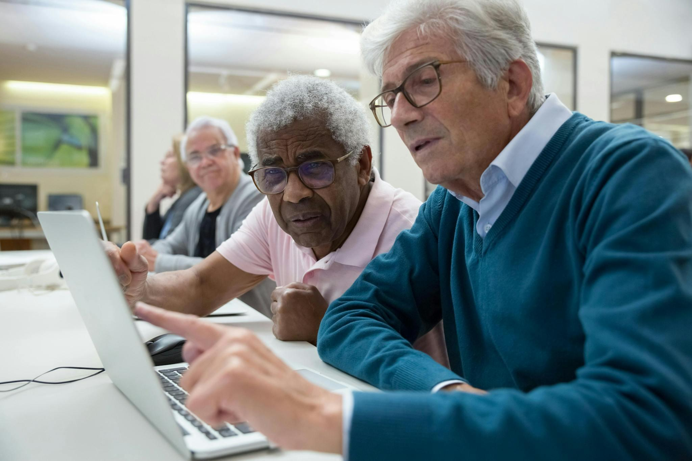

⌂
Community Workshops
Twice per month
Hands-on technology instruction at local libraries and community centers with volunteer assistance.

Accessible, supportive, and practical technology education designed for older adults.
Our proposed program combines in-person learning, online classes, and multilingual education.
Twice per month
Hands-on technology instruction at local libraries and community centers with volunteer assistance.
Once per month
Remote learning opportunities for individuals who cannot attend in-person sessions.
Once per month
Educational opportunities in additional languages to make learning more accessible.
Our proposed curriculum focuses on helping older adults use technology safely and independently.

Digital Bridges proposes launching in eight cities across the United States, with two cities in each of four regions.
We envision partnering with libraries, community centers, and volunteers to provide free educational opportunities.
Following the pilot, we would evaluate participant feedback and opportunities for future expansion.
Our initial plan would serve communities across four regions of the United States.
Pilot locations and schedules have not yet been established.
Explore future opportunities to support our mission.
Get Involved →